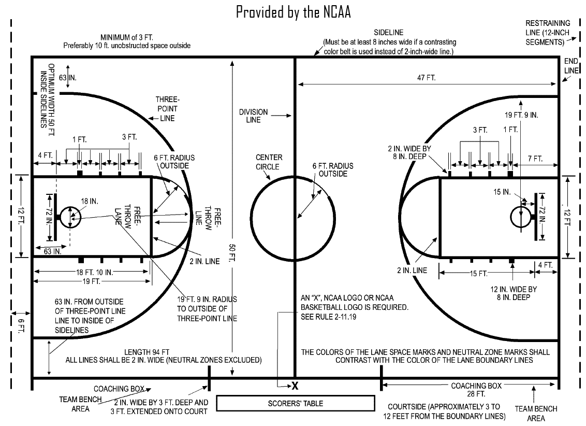

1. The ball maybe thrown in any direction with one or both hands
2. The ball maybe batted in any direction with one or both hands
3. A player cannot run with the ball. The player must throw it from the spot on which he catches it.
4. The ball must be held in or between hands. The arms or body must not be used to hold the ball.
5. No shouldering, holding, striking, pushing or tripping in any way of an opponent.
6. A foul is striking the ball with a fist and violations of the rules 3,4 and 5.
7. If either side makes three consecutive fouls, it shall count as a goal for the opponent
8. A goal shall be made when the ball is thrown or batted from the ground into the basket and stays there without falling, providing those defending the goal do not touch or disturb the goal. If done so, it shall count as a goal.
9. When the ball goes out of ground, it shall be thrown into the field of play and played by the first person touching it. In case of dispute, the umpire shall throw it straight into the field.
10. The umpire is the judge of the men and shall note the fouls made and notify the referee when 3 consecutive fouls have been made.
11. The referee shall be the judge of the ball and shall decide when the ball is in play, in bounds and to which side it belongs. He shall also decide when a goal has been made and keep count of the baskets.
12. The time shall be two fifteen minutes halves, with fifteen minutes of rest in between halves.
13. The side making the most points within that time period is declared as winner
